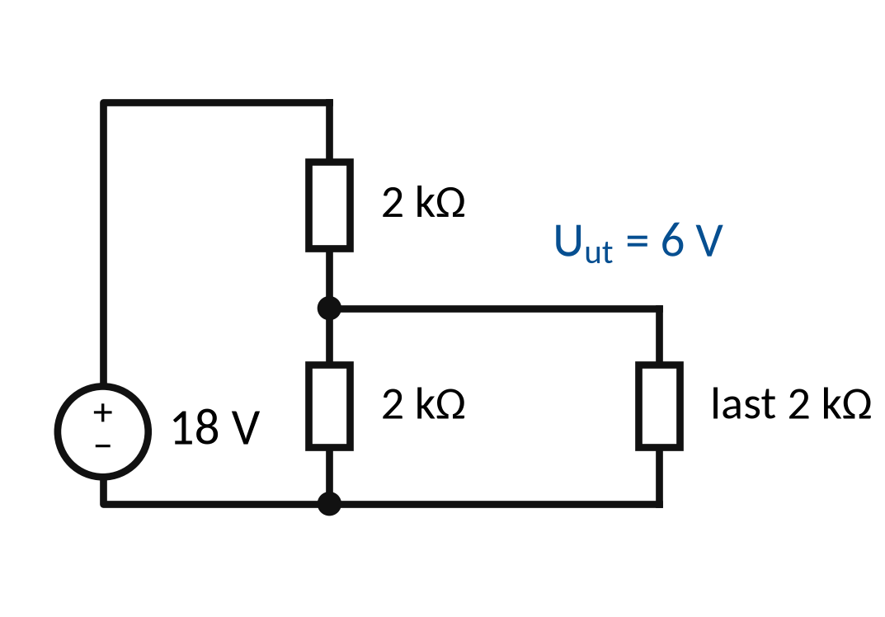
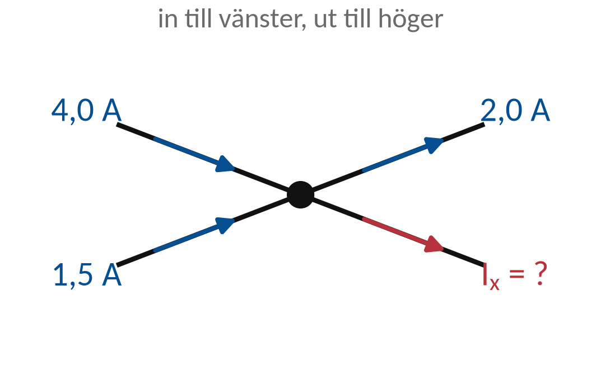
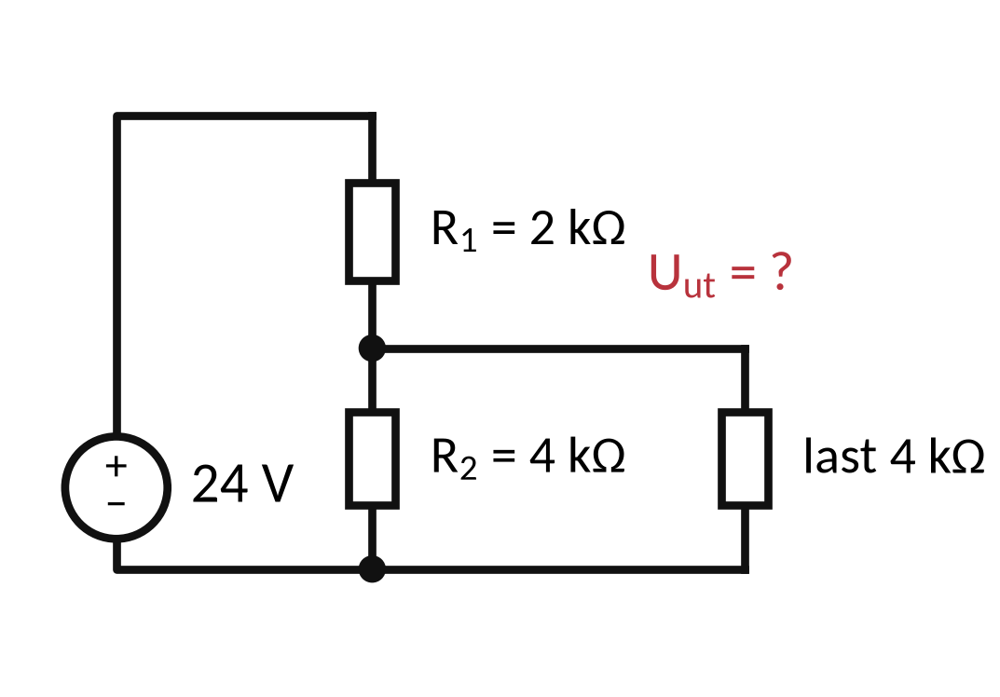
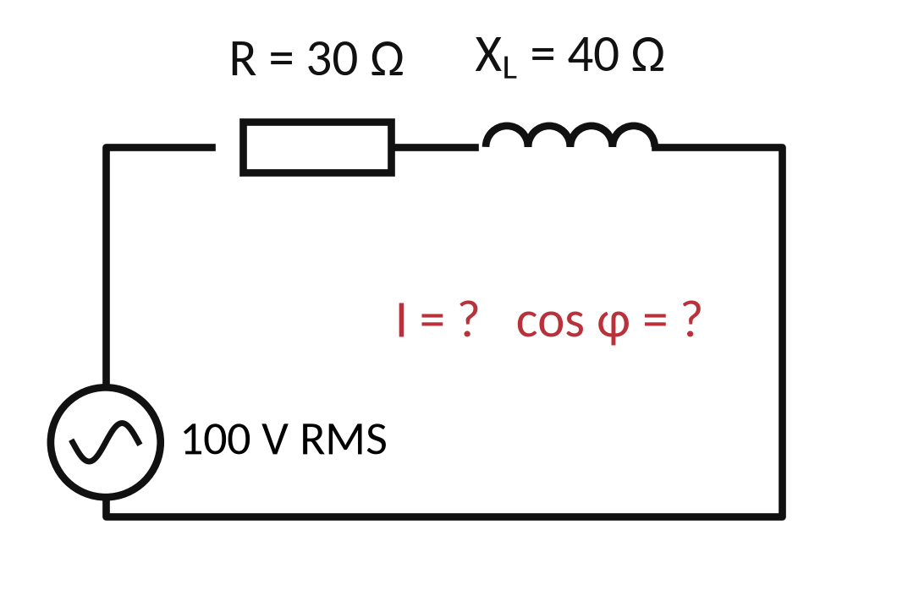
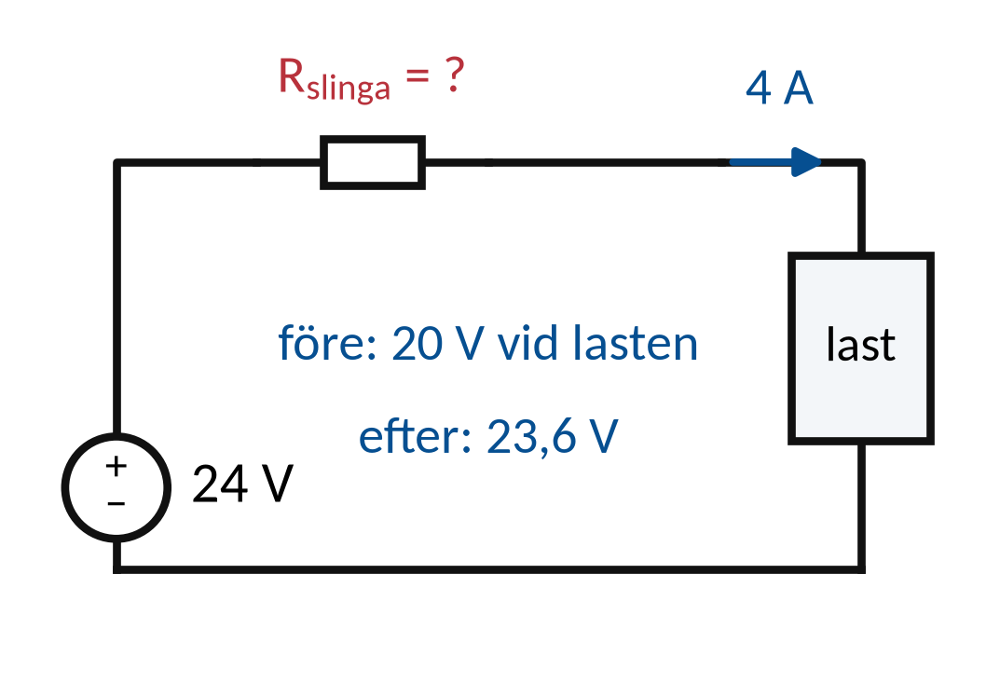

Vecka 45 · Del 3 av 3
Del 3: Repetition inför tentamen
1 Översikt
Det här ska du kunna
- Välja rätt samband och redovisa beräkningar tydligt.
- Motivera instrumentval, regelval och felsökningsbeslut.
Fundera först: Vilket område behöver du mest träna: kretsar, AC/trefas, säkerhet eller mätanalys? Svaret finns i teorin nedan.
Så gör du
- Läs teorin ett avsnitt i taget (7 korta avsnitt). Sist i varje avsnitt står vilka övningar du kan göra direkt.
- Följ exemplen med papper och räknare, steg för steg. Gissa nästa steg innan du läser det.
- Gör övningarna 3.1–3.10. Fastnar du: Ledtråd 1 visar vilket samband du behöver och var i teorin det förklaras. Ledtråd 2 visar hur du börjar och Ledtråd 3 exemplet som räknar samma sorts uppgift med andra tal. Öppna facit när du har ett eget svar.
- Lämna in veckans uppgifter: Veckans inlämning.
Så skriver du en lösning som går att följa
1. Givet och sökt
Skriv av värden, enheter och vad du ska bestämma.
2. Samband och villkor
Välj formel eller princip. Kontrollera koppling, driftfall och antaganden.
3. Uträkning och kontroll
Omvandla enheter, sätt in värden och tolka resultatet.
I resonemangsfall: koppla observation till en motiverad slutsats.
Lärarens presentation · PDF · Räknarhjälp · Formelblad
Förkortningar och beteckningar i den här delen (16)
- P
- aktiv effekt. Den effekt som verkligen blir värme eller arbete. Enhet: W (watt), kW.
- AC
- växelström, växelspänning (engelska: alternating current). Ström eller spänning som byter riktning hela tiden, till exempel 230 V i ett eluttag. På multimetern står läget ofta som V~ eller AC.
- t
- tidpunkt. Tiden räknad från en stigande nollpassage. Enhet: s.
- T
- periodtid. Tiden för en hel period. T = 1/f. Enhet: s eller ms. 50 Hz ger T = 20 ms.
- f
- frekvens. Antal hela perioder per sekund. Enhet: Hz.
- R
- resistans. Resistorns motstånd mot ström. Beror inte på frekvensen. Enhet: Ω (ohm).
- DC
- likström, likspänning (engelska: direct current). Ström eller spänning med samma riktning hela tiden, till exempel från ett batteri. På multimetern V⎓ eller DC.
- RMS
- effektivvärde (engelska: root mean square, som betyder kvadratiskt medelvärde). Det värde som ger samma värme i en resistor som en lika stor likspänning. När en spänning anges utan annat, till exempel 230 V eller 12,00 V RMS, är det effektivvärdet. Multimetern visar effektivvärdet. Behöver du skilja effektivvärdet från andra värden skrivs det URMS (eller IRMS för ström). Enhet: V eller A.
- û, î
- toppvärde (u med hatt). Spänningens högsta värde räknat från noll. För sinus är û = √2 · U. Toppvärdet för ström skrivs î. Enhet: V.
- ms
- millisekund. En tusendels sekund: 1 ms = 0,001 s.
- Hz
- hertz. Enheten för frekvens: 1 Hz är en period per sekund. Elnätet ombord är ofta 50 eller 60 Hz. 1 kHz = 1 000 Hz.
- RL
- RL-krets. En krets med resistor (R) och spole (L) i serie. Strömmen släpar efter spänningen.
- cos φ
- cosinus fi. Cosinus av fasvinkeln mellan spänning och ström. För ren sinus är cos φ = PF, därför står cos φ ofta på motorernas märkskylt.
- φ
- fasvinkel (fi). Hur mycket en kurva ligger före eller efter en annan, i grader. Mellan spänning och ström: positiv φ betyder att strömmen släpar (induktiv last). Enhet: °.
- PF
- effektfaktor (engelska: power factor). Hur stor del av den skenbara effekten som är aktiv: PF = P/S, ett tal mellan 0 och 1. Lägre PF ger större ström för samma aktiva effekt.
- |Z|
- impedans (belopp). Kretsens totala motstånd mot växelström, där R och X räknas vinkelrätt: |Z| = √(R² + X²). Strecken betyder belopp (storlek). Enhet: Ω.
2 Teori
Ett avsnitt i taget: öppna det, läs, och gör sedan övningarna som står sist i avsnittet. Formeln bredvid rubriken är det viktigaste i avsnittet.
1Storheten avgör formelvalet
DC-ström beräknas med I = U/R när kretsen är ohmsk.
Energi kräver effekt och tid. Verkningsgrad kan behövas före energiberäkningen.
AC kräver kontroll av vågform och RMS. Trefas kräver tydliga linjevärden.
Mät- och säkerhetsfall behöver dokumenterade villkor, inte bara ett tal.
Öva nu: Övning 3.1, Övning 3.2, Övning 3.4, Övning 3.5
2Likström och effektU = RI P = UI E = Pt
Skriv först vilken storhet som söks.
Använd ett samband som passar kretsens koppling.
U = RI P = UI E = Pt
Serie: samma ström. Parallell: samma spänning.
Enheter och rimlighetskontroll ingår i redovisningen.
Öva nu: Övning 3.9
3Kirchhoff och delareΣI = 0 ΣΔU = 0
Nodlagen beskriver strömbalans. Slinglagen beskriver spänningsbalans.
En ansluten last ändrar en spänningsdelare.
ΣI = 0 ΣΔU = 0
Negativ ström är ett tecken på riktning relativt din pil.
Det är inte automatiskt ett räknefel.
Öva nu: Övning 3.3
4AC och trefas|Z| = √(R² + X²) P₃F = √3 ULIL PF
RMS, toppvärde och medelvärde beskriver olika saker.
Trefasformeln med √3 förutsätter de angivna symmetrivillkoren.
|Z| = √(R² + X²) P₃F = √3 ULIL PF
Skriv om spänningen är linje-, fas- eller grenspänning.
Skilj aktiv effekt från skenbar effekt.
Öva nu: Övning 3.6
5Säkerhet och regelvalRiskbedömning ska leda till verifierbara åtgärder
Utgå från arbetsmoment, system och energikällor.
Kontrollera vilket regelverk som gäller i det angivna fallet.
Riskbedömning ska leda till verifierbara åtgärder
Skydd, kompetens och tydlig ansvarsfördelning hänger ihop.
Ett allmänt standardnamn räcker inte som motivering.
Öva nu: Övning 3.7, Övning 3.8
6Mätning och felsökningObservation skiljs från hypotes och slutsats
Välj mätpunkt och driftläge för att pröva en hypotes.
Bedöm resultatet med instrumentdata och kretsens funktion.
Observation skiljs från hypotes och slutsats
Ett högt spänningsfall kan lokalisera förhöjd resistans.
Skriv vad mätningen visar och vad som återstår.
Öva nu: Övning 3.10
7Redovisning inför examinationDetta pass är repetition, inte ordinarie tentamen
En bra lösning visar samband, insättning, enhet och tolkning.
Öppna fall kräver motiverade beslut med tydliga antaganden.
Detta pass är repetition, inte ordinarie tentamen
Tentamensdatum och tillåtna hjälpmedel meddelas av läraren.
Praktiska lärandemål bedöms genom de särskilda laborationerna.
3 Exempel
Följ exemplet steg för steg med papper och räknare. Försök själv med nästa steg innan du läser det. Övningarna använder samma metod med andra tal.
E1Metodval i en delare
18 V matar 2 kΩ och 2 kΩ i serie. En last på 2 kΩ ansluts över den nedre resistorn.

Rp = R₂ · Rlast/(R₂ + Rlast)
Uut = Uin · Rp/(R₁ + Rp)
- Rp = 2 · 2/(2 + 2) = 1 kΩ.
- Uut = 18 · 1/(2 + 1) = 6 V.
- Itotal = 18/(2 + 1) = 6 mA. Varje nedre gren får 3 mA.
Kontroll: 3 + 3 = 6 mA och fallet över övre resistorn är 12 V. 12 + 6 = 18 V.
E2Mätning efter åtgärd
Källan håller 12 V. Vid 3 A får lasten 10,5 V före och 11,85 V efter åtgärd (strömmen antas oförändrad).
Rslinga = (Ukälla − Ulast)/I
- Före: R = (12 − 10,5)/3 = 0,50 Ω.
- Efter: R = (12 − 11,85)/3 = 0,05 Ω.
- Samma ström och mätpunkter visar tydligt minskad resistans.
Funktionsdata stödjer förbättring. Föreskrivna anslutnings- och säkerhetskontroller ska också dokumenteras.
4 Övningar
Räkna på papper. Bocka av en övning när du har kontrollerat ditt svar mot facit. Avbockningen sparas i den här webbläsaren.
Övning 3.1: Energi och verkningsgrad
En motor ger 400 W på axeln med η = 80 % och går i 3 h. Beräkna den tillförda elektriska effekten och energin.
Givet: Put = 400 W, η = 80 % = 0,80 och drifttiden 3 h. Driften är jämn.
Ledtråd 1: vilket samband?
Använd Pin = Put/η; E = Pin · t. Läs Teori 1: Storheten avgör formelvalet.
Ledtråd 2: hur börjar jag?
Put är effekten på axeln. Dela med η som decimaltal för att få den tillförda effekten. Gör om W till kW och multiplicera med tiden – kW · h ger kWh.
Ledtråd 3: steg för steg med andra tal
1) Tillförd effekt: Pin = Put/η, med η som decimaltal. 2) Energi: E = Pin · t. Räkna P i kW och t i timmar, så blir E i kWh. Exempel: en länspump ger 750 W på axeln med η = 0,75 och går i 4 h: Pin = 1 000 W och E = 1,0 kW · 4 h = 4,0 kWh.
Facit
Pin = 400/0,80 = 500 W. E = 0,5 kW · 3 h = 1,5 kWh.
Svar: Pin ≈ 500,0 W · E ≈ 1,5 kWh
Övning 3.2: Strömlagen
4,0 A och 1,5 A går in i en nod. 2,0 A och Ix går ut. Bestäm Ix.
Givet: 4,0 A och 1,5 A in, 2,0 A och Ix ut. Alla riktningar är givna.

Ledtråd 1: vilket samband?
Använd ΣIin = ΣIut. Läs Teori 1: Storheten avgör formelvalet.
Ledtråd 2: hur börjar jag?
Strömmen in i noden är lika med strömmen ut. Skriv upp ekvationen, lägg ihop strömmarna in och dra bort den kända strömmen ut.
Ledtråd 3: steg för steg med andra tal
1) Summan av strömmarna in i noden är lika med summan ut. 2) Ställ upp ekvationen och lös ut den okända. Exempel: 6,0 A och 2,5 A in, 3,0 A och Ix ut ger Ix = 6,0 + 2,5 − 3,0 = 5,5 A.
Facit
Ix = 4,0 + 1,5 − 2,0 = 3,5 A.
Svar: Ix ≈ 3,5 A
Övning 3.3: Spänningsdelare med last
24 V matar R1 = 2 kΩ och R2 = 4 kΩ i serie. En last på 4 kΩ ligger parallellt med R2. Beräkna utspänningen.
Givet: Uin = 24 V, R1 = 2 kΩ, R2 = Rlast = 4 kΩ. Ideal källa och resistorer med konstant resistans.

Ledtråd 1: vilket samband?
Använd Rp = R2 · Rlast/(R2 + Rlast) och Uut = Uin · Rp/(R1 + Rp). Läs Teori 3: Kirchhoff och delare.
Ledtråd 2: hur börjar jag?
Rp ersätter den nedre resistorn och lasten, som ligger parallellt. Räkna alla resistanser i samma enhet. Förenkla parallellkopplingen först och använd sedan Rp i delningsformeln.
Ledtråd 3: steg för steg med andra tal
1) Räkna först den parallella kombinationen av R2 och lasten. 2) Använd spänningsdelningen med R1 och den kombinationen. Exempel: 9 V, R1 = 1 kΩ, R2 = 3 kΩ och lasten 6 kΩ ger Rp = 18/9 = 2 kΩ och Uut = 9 · 2/(1 + 2) = 6 V. Rimlighet: lasten sänker utspänningen jämfört med obelastad delare.
Facit
Rp = 4 · 4/8 = 2 kΩ. Uut = 24 · 2/(2 + 2) = 12 V.
Svar: Uut ≈ 12,0 V
Övning 3.4: Sinus och period
En sinusspänning har effektivvärdet 24 V och frekvensen 60 Hz. Beräkna toppvärde och periodtid.
Givet: Ren sinus utan likspänningsdel, URMS = 24 V och f = 60 Hz.
Ledtråd 1: vilket samband?
Använd û = √2 · URMS; T = 1/f. Läs Teori 1: Storheten avgör formelvalet.
Ledtråd 2: hur börjar jag?
û är toppvärde. T är period i s. Multiplicera T med 1 000 för ms. Beräkna toppvärde och period separat. Använd RMS endast i omvandlingen, inte som toppvärde.
Ledtråd 3: steg för steg med andra tal
1) Toppvärdet: û = √2 · URMS. 2) Periodtiden: T = 1/f, gör om till ms. Exempel: vägguttagets 230 V och 50 Hz ger û ≈ 325 V och T = 20 ms.
Facit
û ≈ 33,9 V. T ≈ 16,7 ms.
Svar: T ≈ 16,7 ms
Övning 3.5: RL och effektfaktor
R = 30 Ω och XL = 40 Ω i serie över 100 V RMS. Bestäm I och cos φ.
Givet: RL i serie: R = 30 Ω, XL = 40 Ω och U = 100 V RMS.

Ledtråd 1: vilket samband?
Använd |Z| = √(R² + XL²) och I = U/|Z|; cos φ = R/|Z|. Läs Teori 1: Storheten avgör formelvalet.
Ledtråd 2: hur börjar jag?
R är den resistiva och XL den induktiva delen av impedansen. U och I är effektivvärden. Räkna ut impedansen och använd den för både ström och effektfaktor.
Ledtråd 3: steg för steg med andra tal
1) Räkna |Z| = √(R² + XL²). 2) Strömmen: I = U/|Z|. 3) Effektfaktorn: cos φ = R/|Z|. Exempel: en fläktmotor med R = 50 Ω och XL = 120 Ω på 230 V ger |Z| = 130 Ω, I ≈ 1,77 A och cos φ ≈ 0,38.
Facit
|Z| = 50 Ω. I = 2,0 A. cos φ = 0,60.
Svar: I ≈ 2,0 A · cos φ ≈ 0,6
Övning 3.6: Trefaseffekt
En symmetrisk trefaslast har UL = 400 V, IL = 8 A och PF = 0,80. Beräkna den aktiva effekten.
Givet: Symmetrisk trefas, UL = 400 V, IL = 8 A och PF = 0,80.
Ledtråd 1: vilket samband?
Använd P = √3 · UL · IL · PF. Läs Teori 4: AC och trefas.
Ledtråd 2: hur börjar jag?
P är den totala aktiva effekten i W. UL och IL är linjevärden. Multiplicera faktorerna och gör om W till kW. Använd inte grenspänningen i den här formeln.
Ledtråd 3: steg för steg med andra tal
1) Kontrollera att du har linjespänning, linjeström och effektfaktor. 2) P = √3 · UL · IL · PF. 3) Gör om till kW. Exempel ombord: 440 V, 12 A och PF = 0,85 ger P ≈ 1,732 · 440 · 12 · 0,85 ≈ 7 770 W ≈ 7,77 kW.
Facit
P = 1,732 · 400 · 8 · 0,80 ≈ 4 430 W ≈ 4,43 kW.
Svar: P ≈ 4,43 kW
Övning 3.7: Mätgräns
Ett instrument visar 24,00 V. Specifikationen är ±(1,0 % + 2 siffror) och upplösningen 0,01 V. Beräkna felgränsen.
Givet: Visat värde 24,00 V, a = 1,0, n = 2 och upplösning 0,01 V.
Ledtråd 1: vilket samband?
Använd δ = (a/100) · visning + n · upplösning. Läs Teori 5: Säkerhet och regelval.
Ledtråd 2: hur börjar jag?
δ är felgränsen. n siffror betyder n steg i sista siffran, inte n decimaler. Räkna procentdelen och siffrornas del var för sig, lägg ihop och skriv svaret som visat värde ± δ.
Ledtråd 3: steg för steg med andra tal
1) Procentdelen: a % av det visade värdet. 2) Siffrorna: n gånger upplösningen. 3) Lägg ihop. Exempel: 12,00 V med ±(0,5 % + 2 siffror) och upplösningen 0,01 V ger δ = 0,06 + 0,02 = 0,08 V och intervallet 11,92–12,08 V.
Facit
δ = 0,24 + 0,02 = 0,26 V. 24,00 ± 0,26 V, alltså 23,74–24,26 V.
Övning 3.8: Riskbedömning
Arbetsplanen tar med huvudmatningen men har missat batterireserven. Ange bristen, en möjlig konsekvens och det första beslutet.
Givet: Batterireserven saknas i arbetsplanen. Det är därför inte kontrollerat att hela området är spänningslöst.
Ledtråd 1: vilken princip?
Utgå från Alla energikällor ingår i arbetsberedningen. Läs Teori 5: Säkerhet och regelval.
Ledtråd 2: hur börjar jag?
En batterireserv kan mata delar av anläggningen även när huvudmatningen är frånkopplad. Beskriv bristen, en möjlig följd och det första beslutet, och ange vad som måste läggas till innan arbetet börjar.
Ledtråd 3: steg för steg
1) Vad saknas i planen? 2) Vad kan hända om det inte rättas? 3) Vilket beslut tas först: att starta eller att stoppa? 4) Vad måste läggas till innan arbetet får börja?
Facit
Brist: batterireserven saknas i planen. Konsekvens: delar kan vara spänningssatta under arbetet. Beslut: arbetet startar inte förrän reserven är frånskild, låst och kontrollerad.
Övning 3.9: Hållkrets
K1 drar när START trycks in men släpper när knappen släpps. Matningen har rätt spänning under starten. Föreslå en tänkbar orsak och nästa kontroll.
Givet: K1 drar när START hålls in och släpper efteråt. Matningsspänningen är rätt under starten.
Ledtråd 1: vilken princip?
Utgå från Vilken väg ska hålla K1 efter START-släpp?. Läs Teori 2: Likström och effekt.
Ledtråd 2: hur börjar jag?
Hållkontakten (NO) ligger parallellt med START och ska sluta när K1 drar. Föreslå en orsak i hållvägen och en kontroll som prövar den, enligt en säker mätplan.
Ledtråd 3: steg för steg
1) Matningen är rätt under starten, så vilken del av kretsen återstår? 2) Välj en tänkbar orsak i hållvägen. 3) Beskriv en mätning som skiljer ”kontakten sluter” från ”kontakten sluter inte”. Följ en säker mätplan.
Facit
Hypotes: hållvägen är bruten, till exempel att K1:s NO-kontakt inte sluter. Kontroll: mät över hållkontakten med K1 draget. 0 V betyder att den sluter, full spänning att den är öppen.
Övning 3.10: Felsökning med data
En 24 V-källa matar en last. Vid 4 A mäts 20 V vid lasten. Efter en åtgärd mäts 23,6 V vid samma ström. Beräkna slingresistansen före och efter.
Givet: Källan håller 24 V. Vid 4 A är spänningen vid lasten 20 V före och 23,6 V efter. Mätpunkterna är desamma.

Ledtråd 1: vilket samband?
Använd Rslinga = (Ukälla − Ulast)/I. Läs Teori 6: Mätning och felsökning.
Ledtråd 2: hur börjar jag?
Slingresistansen är resistansen i fram- och returledaren tillsammans. Räkna ut spänningsfallet och resistansen före och efter, och jämför.
Ledtråd 3: steg för steg med andra tal
1) Slingresistansen: R = (Ukälla − Ulast)/I. 2) Räkna före och efter åtgärden med samma ström. 3) Jämför: minskade resistansen? Exempel: 24 V och 5 A, 21,5 V vid lasten före och 23,0 V efter, ger 0,50 Ω före och 0,20 Ω efter.
Facit
Före: (24 − 20)/4 = 1,0 Ω. Efter: (24 − 23,6)/4 = 0,10 Ω.
Klart med delen?
Vilket metodval kan du nu förklara bättre än vid lektionens start?
Repetera de uppgifter där metoden var osäker. Kontrollera lärarens besked om tentamensdatum, hjälpmedel och eventuella kompletteringar.
5 Labben
Labben kommer sist i veckan, när du har gått igenom del 1–3. Du använder samma metod som i övningarna: räkna först, läs av, jämför och förklara.
Veckans labbar Veckans inlämning
Källor och fortsatt läsning
Studieplanen YH03151, 18 september 2026 Sjöskolans kursmaterial och originalmall
OpenStax: Kirchhoffs lagar
OpenStax: enkla växelströmskretsar
Schneider Electric: skenbar effekt
SEK: SS-EN 50110-1, utgåva 4:2024